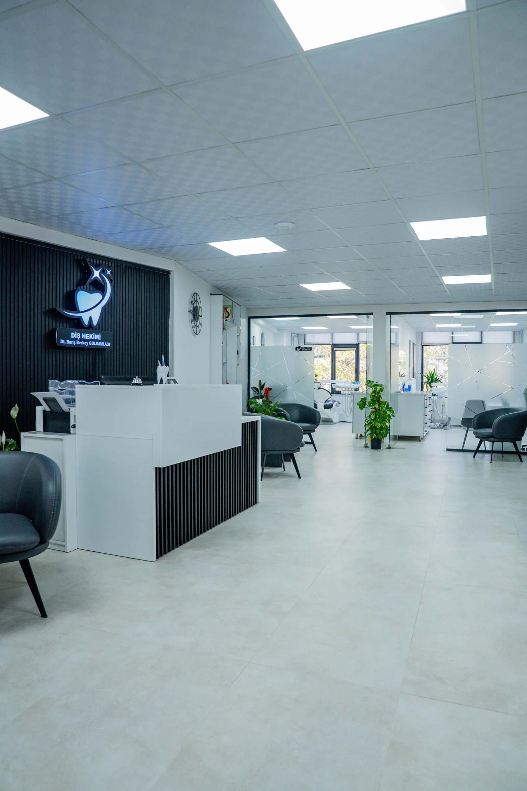
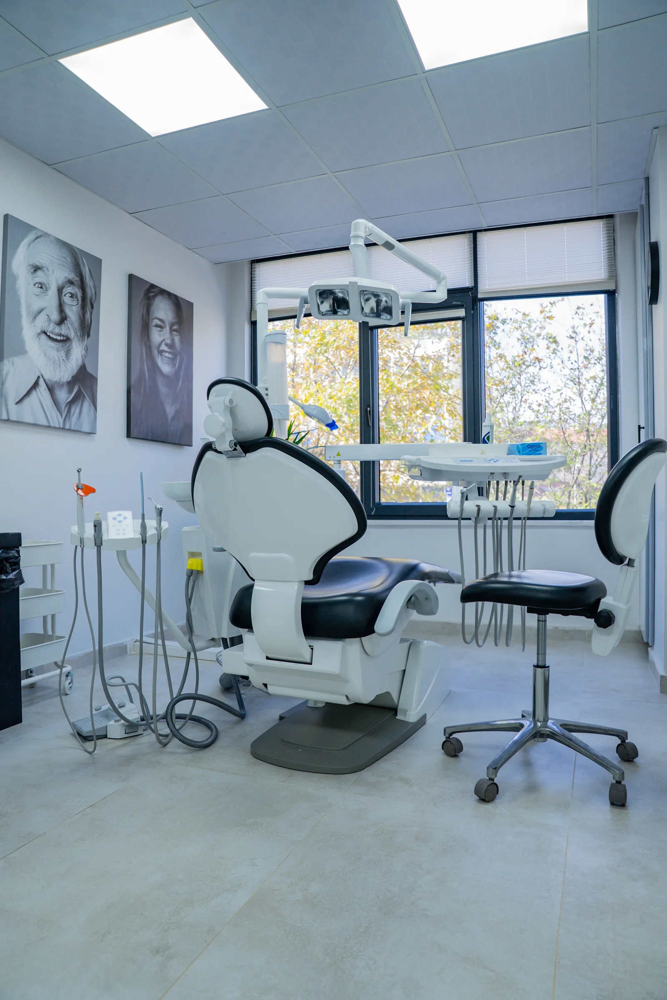
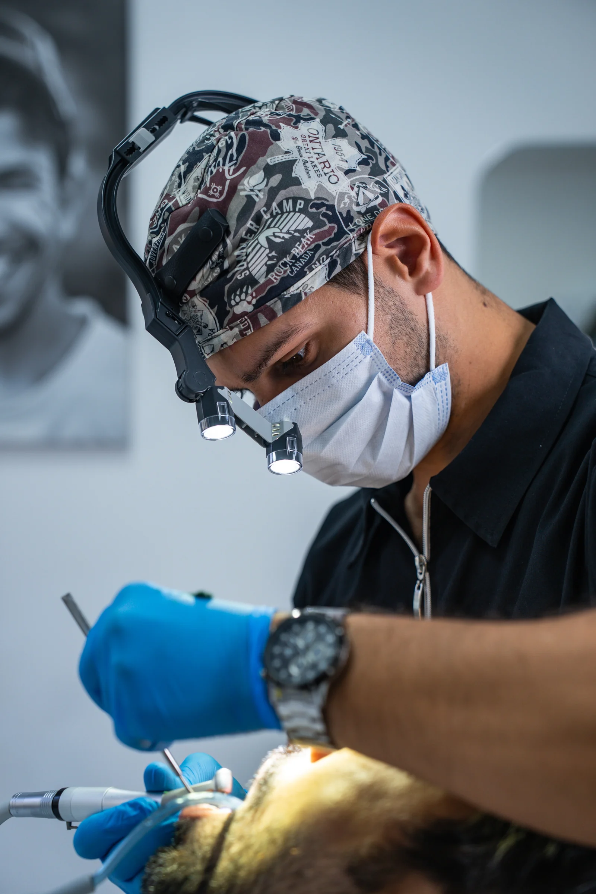
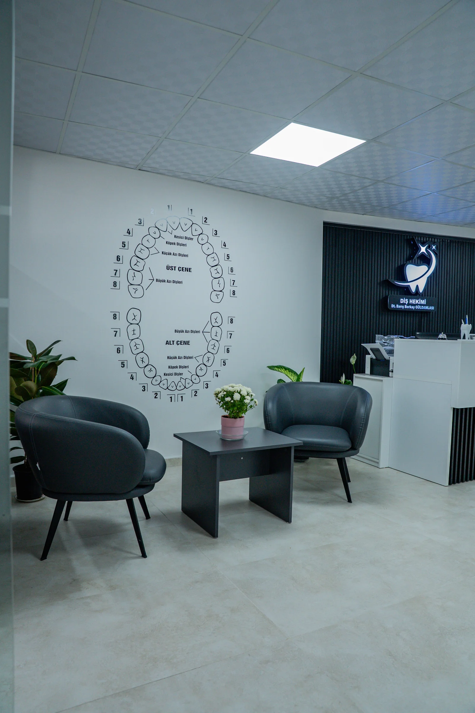

Barış Berkay GÜLDAMLASI
Her gülümseme,
özen ve güvenle başlar.
Diş Hekimi Barış Berkay GÜLDAMLASI
Kastamonu'da diş hekimi
2017–2022 yılları arasında Ondokuz Mayıs Üniversitesi Diş Hekimliği Fakültesinde eğitimimi tamamlayarak diş hekimliği mesleğine adım attım. Mezuniyetimin ardından Sinop'un Boyabat ilçesinde, tam donanımlı bir ağız ve diş sağlığı polikliniğinde üç yıl boyunca aktif olarak görev aldım. Bu süreçte farklı ihtiyaçlara sahip hastalarla çalışma ve mesleki deneyimimi geliştirme fırsatı buldum.
Mesleki gelişimin sürekli öğrenmekten geçtiğine inanıyorum. Mezuniyetimden itibaren temel implantoloji, endodonti, botulinum toksin ve dermal dolgu alanlarında, alanında deneyimli eğitmenlerden çeşitli eğitimler aldım. Edindiğim bilgi ve deneyimleri güncel yaklaşımlarla geliştirmeye önem veriyorum.
Memleketim Kastamonu'da, kendi muayenehanemi kurarak hastalarıma hizmet vermeye başladım. Modern teknolojiler ve güncel ekipmanlarla donattığım kliniğimde; her hastanın ihtiyaçlarını ayrı ayrı değerlendirmeyi, tedavi seçeneklerini anlaşılır biçimde paylaşmayı ve tedavi sürecini güvene dayalı bir iletişimle yürütmeyi önemsiyorum.
Kliniğimizden
kareler.




Tedavi
hizmetlerimiz.
Ağız ve diş sağlığınızla ilgili ihtiyaçlarınızı
altı başlıkta birlikte değerlendirelim.
Diş eti tedavileri (periodontal tedaviler)
- Diş taşı temizliği
- Diş eti hastalıklarının değerlendirilmesi ve tedavisi
- Periodontal muayene
- Diş eti sağlığının takibi
Çocuk diş hekimliği
- Çocuklarda ağız ve diş muayenesi
- Süt dişi tedavileri
- Koruyucu flor uygulamaları
- Fissür örtücü uygulamaları
- Çocuklarda ağız hijyeni eğitimi
Cerrahi uygulamalar ve implant diş tedavileri
- Diş çekimi
- Cerrahi diş çekimi
- İmplant tedavisi değerlendirmesi ve planlaması
- Dental implant uygulamaları
- İmplant üstü protezler
Kanal tedavisi ve restoratif diş tedavileri
- Kanal tedavisi
- Kanal tedavisinin yenilenmesi
- Kompozit dolgu
- Çürük tedavisi
- Kırık dişlerin restorasyonu
- Diş aşınmalarının değerlendirilmesi ve restorasyonu
- Eski dolguların yenilenmesi
Protetik ve estetik diş tedavileri
- Zirkonyum kaplama
- Porselen kuron ve köprü
- Eksik dişlerin protetik olarak tamamlanması
- Hareketli protezler
- Diş beyazlatma
- Ön diş estetik dolguları
Diğer değerlendirme ve tedaviler
- Diş sıkma ve gıcırdatmanın değerlendirilmesi
- Bruksizm için uygun hastalarda gece plağı planlaması
- Masseter botoks planlaması ve uygulaması
- Hassasiyet tedavileri
- Diş travmalarının değerlendirilmesi
Tedavi uygunluğu ve kapsamı muayene sonrası belirlenir. Hizmet detayları ve güncel uygulamalar için kliniğimizle iletişime geçiniz.
Aklınızdaki
sorular için.
Burada yanıtını bulamadığınız sorularınız
için kliniğimizle iletişime geçebilirsiniz.
Nasıl randevu alabilirim?
0540 740 00 37 numarasını arayarak, WhatsApp üzerinden veya online randevu hizmetimizden bilgilerinizi doldurarak güvenle randevu alabilirsiniz.
İlk muayenede neler değerlendirilir?
Ağız, diş sağlığınız ve genel sağlık durumunuz değerlendirilir. Şikâyetleriniz ve beklentileriniz dinlenir; gerekli görülürse ek incelemeler ve size uygun tedavi seçenekleri görüşülür. Varsa önceki tetkiklerinizi ve kullandığınız ilaçların bilgisini yanınızda getirebilirsiniz.
Tedavi ücretini nasıl öğrenebilirim?
Tedavi ihtiyacı ve kapsamı kişiye göre değişir. Ücret ve süreç hakkında doğru bilgi için klinikle iletişime geçebilir, muayene sonrasında tedavi planınızı görüşebilirsiniz.
Klinik nerede bulunuyor?
Klinik Cebrail Mahallesi, Plevne Caddesi No:24/1, Kastamonu Merkez adresindedir. İletişim bölümündeki yol tarifi bağlantısı ile konuma ulaşabilirsiniz.
Çalışma saatleriniz nedir?
Hafta içi 09:00–19:00, Cumartesi 10:00–17:00 saatleri arasında hizmet veriyoruz. Pazar günleri kapalıyız. Ziyaret öncesi telefonla randevu ve saat bilgisini teyit etmenizi öneririz.
Gülümsemeniz için
birlikte ilk adımı atalım.
Randevu talebiniz ve sorularınız için bize ulaşın.
Çalışma saatleri
- Hafta içi
- 09:00 – 19:00
- Cumartesi
- 10:00 – 17:00
- Pazar
- Kapalı